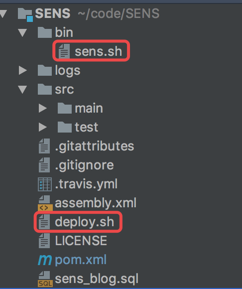

自己经常写一些小项目，有时候是自己写，更多时候是帮别人写。 一般都要部署到服务器上，最早使用的方法是本地 mvn clean package 打包好，上传到服务器上运行。有时候发现自己写了个bug，修复了，或者改了点/加了点需求，改完代码，又要重新打包，上传。 反反复复，很麻烦。之前在公司，用的是 jenkins，解决了这个痛点，
jenkins 搭好了后，只需要在 jenkins 后台点击构建即可。后来，也用了一段时间公司自己开发的一个云产品，类似 EDAS 的一个东西，只需要把代码推到 GitLab上， 构建项目，运行项目全在后台操作，安全可靠。 但是这些东西，都是针对大型项目，项目复杂度高，服务器配置也高。自己一个人开发的小项目，通常都是单模块项目，客户的服务器配置可能也不高，2G内存，1G内存都有可能。 于是，直接用 shell 脚本启动项目不失为一种好方法。
具体实现
代码结构如下

主要思路就是，通过 shell 脚本执行以下几个操作
- git pull 拉取 git 仓库最新代码
- 停止之前运行的项目
- mvn clean package -Dmaven.test.skip=true 打包项目
- cd target 进入 target 目录
- nohup java -jar sens-latest.jar & 后台运行 jar 包
sens.sh
#!/bin/bash
APP_NAME=sens-latest.jar
usage() {
echo "用法: sh sens.sh [start(启动)|stop(停止)|restart(重启)|status(状态)]"
exit 1
}
is_exist(){
pid=`ps -ef|grep $APP_NAME|grep -v grep|awk '{print $2}' `
if [ -z "${pid}" ]; then
return 1
else
return 0
fi
}
start(){
is_exist
if [ $? -eq "0" ]; then
echo "${APP_NAME} 正在运行。 pid=${pid} ."
else
nohup java -server -Xms256m -Xmx512m -jar $APP_NAME > /dev/null 2>&1 &
echo "${APP_NAME}启动成功，请查看日志确保运行正常。"
fi
}
stop(){
is_exist
if [ $? -eq "0" ]; then
kill -9 $pid
echo "${pid} 进程已被杀死，程序停止运行"
else
echo "${APP_NAME} 没有运行。"
fi
}
status(){
is_exist
if [ $? -eq "0" ]; then
echo "${APP_NAME} 正在运行。Pid is ${pid}"
else
echo "${APP_NAME} 没有运行。"
fi
}
restart(){
stop
start
}
case "$1" in
"start")
start
;;
"stop")
stop
;;
"status")
status
;;
"restart")
restart
;;
*)
usage
;;
esac
deploy.sh
#!/bin/bash
# 指定SENS的根目录，请按实际修改
SENS_DIR="/www/wwwroot/SENS"
# 拉取最新的源码
# git pull
echo "代码拉取完毕！"
# 进入SENS根目录
cd $SENS_DIR
# 停止SENS
sh $SENS_DIR/bin/sens.sh stop
# 执行打包
mvn clean package -Pprod -Dmaven.test.skip=true
echo "代码拉取完毕！"
# 进入打包好的SENS目录
cd $SENS_DIR/target/dist/sens
# 运行SENS
nohup java -server -Xms256m -Xmx512m -jar `find ./ -name "sens*.jar"` > /dev/null 2>&1 &
echo "SENS部署完毕，Enjoy！"
启动项目：sh deploy.sh
停止项目：sh sens.sh stop